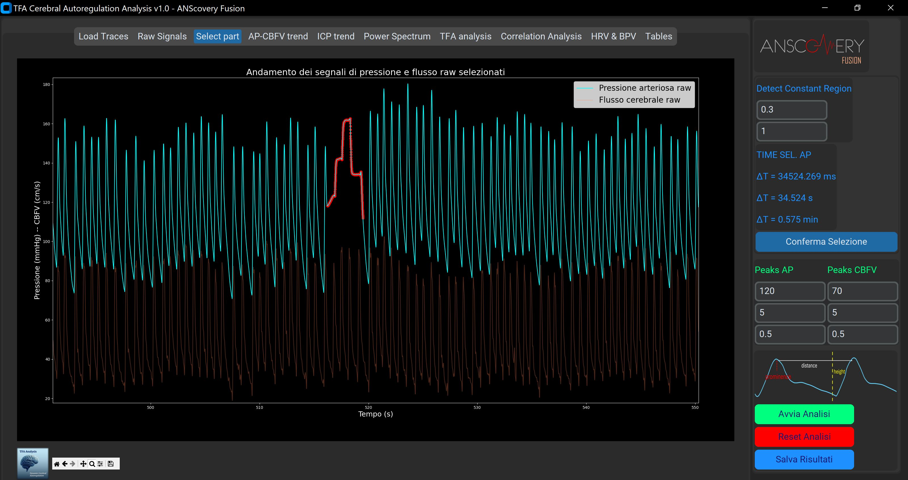

Fase 1 - Pre-processing e Rimozione Artefatti
📊 Raw Signals Tracciato con rumore e artefatti

📊 Select Part Segmento pulito selezionato
🔍 Punti Chiave del Pre-processing
Selezione Tracciato
- Ispezione visuale interattiva
- Selezione segmento più stabile
- Rimozione periodi con artefatti
Rimozione "Physiocal"
- Algoritmo automatico detect_constant_amplitude_regions
- Identificazione regioni piatte da calibrazione NOVA
- Soglia configurabile dall'utente
Filtraggio Digitale
- Filtro passa-basso Butterworth
- Preservazione morfologia forma d'onda
- Preparazione per peak detection affidabile